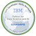

PYTHON-FRONT END 2023
Python for Data Science, AI & Development (IBM) (Link cert)
Escuela de Música Popular de Avellaneda Instrumentista- Bajo Eléctrico, Especialidad, Música Popular.
Universidad de Buenos Aires- Licenciatura en fisica 2007.
Desk Support Specialist:
Gestión de cableado estructurado, planificación de redes, configuración de routers, swiches y racks.
Mantenimiento del parque informático. Armado de PCs de escritorio, configuración y troubleshooting de impresoras, scanners, y otros periféricos.
Gestión de Proveedores (Contacto, Contrato, Servicio).
Backup y restore de datos en LTO utilizando Veeam Backup & Replication.
Soporte de pasaje de programas, tablas, etc. de los ambientes de desarrollo y test al ambiente de Producción
Soporte y capacitación a usuarios de manera presencial y remota. Uso del sistema operativo, paquete office, browsers, software específico de la empresa, VPN.
La empresa Newcor actualmente presta los servicios mencionados a la empresa Segurcoop.
Participé de una migración del servidor de correo desde Microsoft Exchange a Zimbra Collaboration.
Montajista:
Montaje y desmontaje de instalaciones, cuadros y esculturas, atendiendo a criterios de conservación preventiva.Trabajos realizados para diferentes entidades entre ellas Fundación PROA, MUNTREF (museo del inmigrante), MAMBA (museo de arte moderno de buenos aires), Fundacion OSSDE, Galeria Gachi Prieto, Galeria Sendros, Galeria Quimera, Galeria Miranda Bosh, Galeria Camarones.
Director de Garantías Atención al Cliente y Ventas; Logística y Mantenimiento:
Manejo de RMA (Return Merchandise Authorization), autorizaba la devolución de mercadería en caso de falla de fábrica dentro del período de garantía establecido. Una vez emitida la autorización, me comunicaba con el proveedor del producto para poder brindarle al cliente la devolución (equipo nuevo, reembolso del producto o reparación del producto).
Atención al cliente (telefónica y personalmente), apertura del local (disponía de la confianza del jefe, teniendo un juego de llaves, para apertura del local comercial), Manejo de caja y personal.
Contabilidad (Paso de facturas al sistema contable, pagos a proveedores, conteo de ingresos por mercancía) Encargado de logística, envíos de mercadería dentro de capital federal y al interior del país, Chequeo de mercadería entrante.
Mantenimiento general del local. Supervisión de reparaciones y Aseguramiento de la calidad y buen estado de las instalaciones para asegurar la logística y el servicio brindado